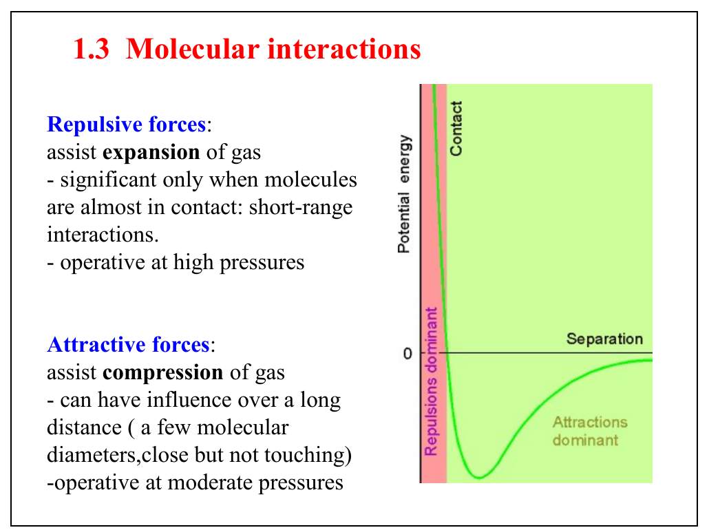
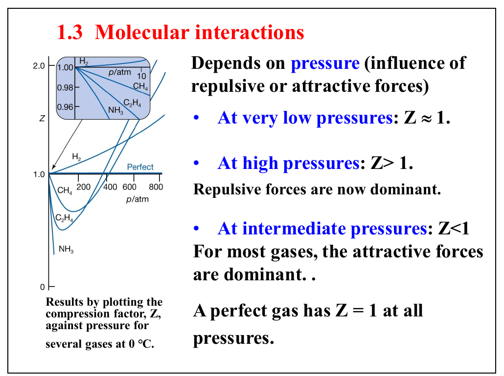
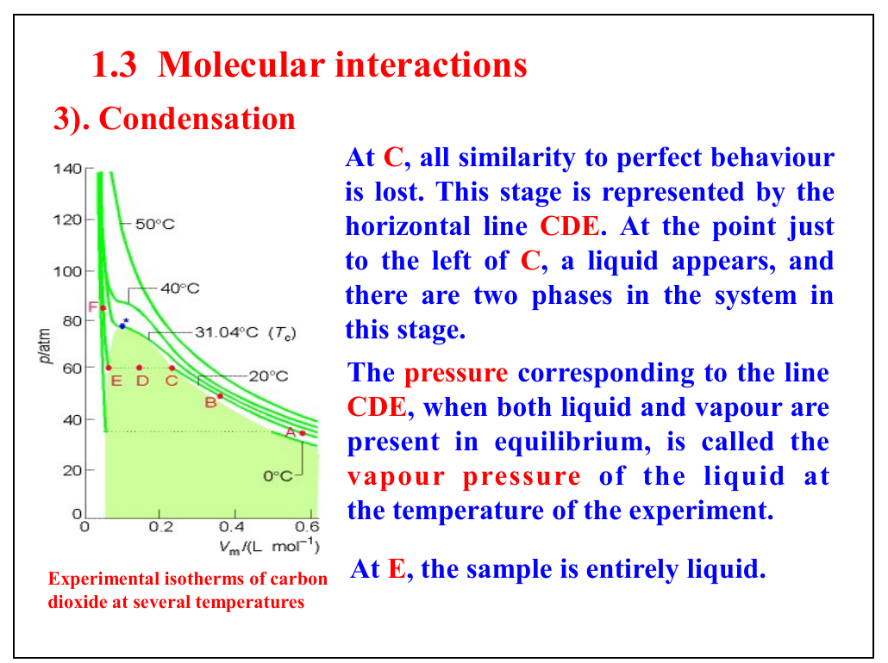
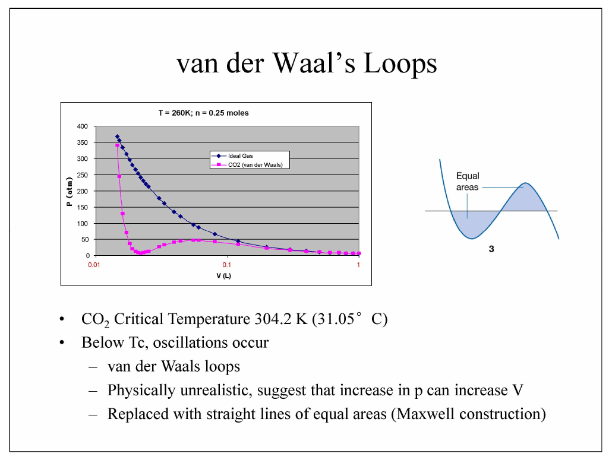

← 返回课程笔记
LECTURE 02 · GASES
真实气体与状态方程
Real gases, virial equations, critical phenomena, and the van der Waals equation
授课课件原理重构公式分数化典型计算
0. 本课的逻辑主线
理想气体方程把气体看作“没有体积、彼此不作用”的质点集合。真实气体偏离理想行为，根源只有两项：分子占有有限体积，以及分子间存在吸引和排斥。本课所有新量和新方程，都是在描述这两种修正。
实验偏差→压缩因子 Z→维里展开→van der Waals 模型→对应状态
先记结论低压时分子相距很远，真实气体都趋近理想气体；中等压力下吸引常占主导，高压下短程排斥和有限分子体积占主导。
1. 状态方程与理想气体：作为参照系
纯气体的平衡状态可由 p、V、T、n 描述，但四者并不独立。指定其中三个，第四个由状态方程确定：
p = f(T,V,n)
理想气体状态方程及摩尔形式为：
pV = nRT pVm = RT Vm = Vn
“理想”不是指气体稀薄或不存在质量，而是指它在所有状态下严格服从 pV = nRT。真实气体只在 p → 0 的极限趋于这一关系。
单位检查使用 R = 8.314 J·mol−1·K−1 时，pV 必须用 J；若压力用 atm、体积用 L，则应使用 R = 8.2057 × 10−2 L·atm·mol−1·K−1。
1A. 气体动理论：从分子碰撞得到压力与温度
气体动理论把宏观压力和温度连接到分子运动。基本假设是：分子数量巨大、随机且各向同性运动；分子自身体积可忽略；除瞬时完全弹性碰撞外，不存在分子间作用；分子服从经典力学。
压强方程的推导
- 取边长为 L 的立方容器。一个质量为 m、x 方向速度分量为 cx 的分子撞击垂直于 x 轴的器壁，每次传递动量 2mcx。
- 它连续撞击同一器壁的时间间隔为 2Lcx，因此该分子产生的平均力为 mcx2L。
- 对 N 个分子求和，并除以器壁面积 L²：
p=Nm⟨cx2⟩V
- 随机运动各向同性，所以 ⟨cx2⟩=⟨cy2⟩=⟨cz2⟩=13⟨c²⟩，得到：
p=13NmV⟨c²⟩=13ρ⟨c²⟩
压力不是分子“静止地压在壁上”，而是大量分子撞壁时单位时间、单位面积传递的动量。
把上式与 pV=NkT 比较，可得单个分子的平均平动动能：
⟨Etr⟩=12m⟨c²⟩=32kT
因此温度量度的是分子平均平动动能，而不是某一个分子的瞬时速度。均方根速率为：
crms=√⟨c²⟩=√3kTm=√3RTM
量意义常用单位
N容器中的分子总数无量纲计数
m单个分子的质量kg
c单个分子的速率；cx 是速度的 x 分量m·s⁻¹
⟨c²⟩速率平方的分子集合平均m²·s⁻²
ρ气体质量密度，等于 NmVkg·m⁻³
kBoltzmann 常数J·K⁻¹
M摩尔质量kg·mol⁻¹
模型边界真实气体在高密度或低温下不能忽略分子体积和相互作用，因此动理论的这一简单形式主要描述稀薄理想气体。
2. 混合气体：摩尔分数、分压与 Dalton 定律
组分 J 的摩尔分数是该组分物质的量在总物质的量中所占比例：
xJ = nJn n = ΣnJ ΣxJ = 1
对于理想气体混合物，组分 J 的分压为：
pJ = xJp = nJRTV p = ΣpJ
分压可以理解为：若该组分在同一 T、V 下单独占据容器，它会产生的压力。由此，混合气体总压只取决于总物质的量；组成则决定各组分怎样分配总压。
课件例题
1.00 mol N₂ 与 3.00 mol H₂，10.0 L，298 K
p = (nN₂+nH₂)RTV = 9.87 atm
xN₂ = 0.250，xH₂ = 0.750，因此 pN₂ = 2.47 atm，pH₂ = 7.40 atm。
3. 为什么真实气体会偏离？
ATTRACTION
吸引作用
分子接近但尚未接触时显著。它把分子向气体内部拉回，使撞壁动量传递减小，实际压力低于理想预测。
REPULSION
排斥与有限体积
分子几乎接触时急剧增强。分子不能相互穿透，可供分子质心运动的体积小于容器体积。

课件 PDF 第 18 页上半页：中程距离由吸引主导，接触附近势能陡升，短程排斥占主导。
降低压力会增大平均分子间距，使两种作用都逐渐可以忽略。这解释了为什么所有真实气体都有：
limp→0 pVm = RT
4. 压缩因子 Z：先量化偏差，再解释偏差
压缩因子把真实气体的摩尔体积与同温同压下理想气体的摩尔体积作比较：
Z = pVmRT = Vm,realVm,ideal
Z = 1理想行为
低压极限必有 Z → 1。
Z < 1吸引占主导
真实气体比理想预测更易被压缩。
Z > 1排斥占主导
常见于高压，有限体积效应显著。
Z 的判读先看 1 的上下
不要把曲线斜率正负直接等同于吸引或排斥。

课件 PDF 第 19 页上半页：不同气体的 Z-p 曲线。中压区常出现 Z<1，高压区最终因排斥作用转为 Z>1。
5. 维里方程：用实验系数逐级修正理想气体
在低密度区，真实气体与理想气体偏差较小，可把 Z 展开为摩尔体积倒数的幂级数：
Z = 1 + B(T)Vm + C(T)Vm2 + ···
pVm = RT(1 + BVm + CVm2 + ···)
推导思路：在零密度附近展开
- 定义摩尔密度 ρm=1Vm。当 ρm→0 时，分子相距很远，Z→1。
- 固定温度，把 Z(T,ρm) 在 ρm=0 附近作 Taylor 展开：
Z = 1 + (∂Z∂ρm)T,0ρm + 12(∂2Z∂ρm2)T,0ρm2 + ···
- 把各阶系数分别定义为 B(T)、C(T)…，再代入 ρm=1Vm，便得到维里方程。
这是低密度极限的系统展开；系数既可由实验曲线拟合，也可由分子相互作用势计算。B 主要体现二体作用，C 进一步包含三体关联。
量意义常用单位
Z压缩因子，衡量偏离理想气体的程度无量纲
Vm摩尔体积m³·mol⁻¹
ρm摩尔密度，等于 1Vmmol·m⁻³
B(T)第二维里系数，低密度下主要反映二分子相互作用m³·mol⁻¹
C(T)第三维里系数，进一步包含三分子关联m⁶·mol⁻²
第二维里系数 B主要反映成对分子相互作用；C 进一步包含三分子关联。它们依赖温度，也依赖气体种类。注意：B 的量纲是体积每摩尔，C 的量纲是体积平方每摩尔平方。
B < 0
低密度下吸引效应占主导，Z 从 1 的下方偏离。
B > 0
低密度下排斥效应占主导，Z 从 1 的上方偏离。
Boyle 温度
在Boyle 温度 TB，第二维里系数为零：
B(TB) = 0 Z = 1 + O(1Vm2)
于是低压下的一阶偏差消失，真实气体在比其他温度更宽的压力范围内近似理想。它并不意味着该气体在所有压力下都严格理想。
6. 液化、蒸气压与临界点
低于临界温度压缩气体时，等温线上会出现水平段。开始出现液滴后，继续压缩主要使气体转化为液体，而不是显著提高压力；此时气液两相共存，平台压力就是该温度下的蒸气压。

课件 PDF 第 23 页上半页：CO₂ 实验等温线。C-E 为气液共存平台；E 点后样品完全液化。
平台随温度升高而缩短，最终在临界点消失。临界等温线在临界点具有水平拐点：
(∂p∂Vm)Tc = 0 (∂2p∂Vm2)Tc = 0
T ≥ Tc 时，仅靠加压不能形成独立液相；临界点对应的 Tc、pc、Vc 称为临界常数。
7. van der Waals 方程：两项物理修正
van der Waals 方程把有限体积和吸引作用写进同一个状态方程。摩尔形式为：
(p + aVm2)(Vm − b) = RT
p = RTVm − b − aVm2
推导思路：对理想模型作两项物理修正
- 从一摩尔理想气体 pVm=RT 出发。
- 体积修正：分子有有限尺寸，质心不能进入全部容器空间，因此把 Vm 换成可用体积 Vm−b。
- 压力修正：靠近器壁的分子受到内部其他分子的净吸引，对器壁的撞击减弱。成对作用数随密度平方变化，因此理想化的“无吸引压力”等于实测 p 加上 aVm2。
- 把两项代回即可得到 (p+aVm2)(Vm−b)=RT。
这是一种物理动机明确的半经验建模，不是由理想气体方程严格推导出的唯一真实气体方程。
量意义常用单位
p气体实测压力Pa
Vm摩尔体积m³·mol⁻¹
T热力学温度K
R摩尔气体常数J·mol⁻¹·K⁻¹
a吸引参数；越大通常表示分子间吸引越强Pa·m⁶·mol⁻²
b排除体积参数；反映分子的有效尺寸m³·mol⁻¹
体积修正 b
分子不可穿透，可用体积由 Vm 改为 Vm−b。b 越大，分子有效尺寸通常越大。
压力修正 a
吸引使实测压力偏低，因此在实测 p 上加内压力 aVm2 才对应“无吸引”的压力。a 越大，吸引通常越强。
对 n mol 气体，总量形式是：
(p + n2aV2)(V − nb) = nRT
极限检查当 T 高、Vm ≫ b 且 aVm2 很小时，van der Waals 方程必须退化为 pVm = RT。任何推导若不能回到这一极限，通常存在代数或物理解释错误。
8. van der Waals 回线与 Maxwell 构造
T < Tc 时，van der Waals 等温线会产生振荡回线，其中一段甚至预测 ∂p∂V > 0，即加压反而膨胀，物理上不稳定。真实体系以恒定压力下的气液两相共存取代该回线。

课件 PDF 第 28 页下半页：van der Waals 回线。水平线按上下两块面积相等确定，这就是 Maxwell 等面积构造。
量意义常用单位
κT等温压缩系数；稳定物质应为正Pa⁻¹
peq该温度下气液两相的共存压力Pa
Vl饱和液体摩尔体积m³·mol⁻¹
Vg饱和蒸气摩尔体积m³·mol⁻¹
在临界点把前述两个导数条件代入 van der Waals 方程，可得：
Vc = 3b pc = a27b2 Tc = 8a27Rb
Zc = pcVcRTc = 38 = 0.375
真实气体的 Zc 并不都等于 0.375，因此该方程能给出定性结构，却不是高精度的普适定量模型。
9. 用 van der Waals 方程求摩尔体积
已知 p、T、a、b 时，代入 p = RTVm−b−aVm2 并清除分母，得到三次方程：
Vm3 − (b + RTp)Vm2 + apVm − abp = 0
课件例题中 CO₂ 在 500 K、100 atm 下，a = 3.640 atm·L²·mol−2，b = 4.267 × 10−2 L·mol−1，可接受根为 Vm = 0.370 L·mol−1。
选根规则三次方程可能给出多个实根。必须同时检查 Vm > b、数值量级、所处相区与原方程回代；不能机械地把第一个实根当作答案。
10. 对应状态原理与约化变量
不同气体的 p、Vm、T 数值尺度差异很大。用各自临界常数归一化，定义约化变量：
pr = ppc Tr = TTc Vr = VmVc
对应状态原理认为，不同气体若具有相同的约化状态变量，其宏观行为近似相同。van der Waals 方程的约化形式不再含 a、b：
pr = 8Tr3Vr − 1 − 3Vr2
工程压缩因子图正是这一思想的应用：由 pr、Tr 估计 Z，再由 Vm = ZRTp 求摩尔体积。它是一种近似规律，不表示所有分子结构差异都消失。
11. 复习与解题检查表
- 先判模型：题目是在低压近似理想，给出 Z，要求维里修正，还是指定 van der Waals 方程？
- 再统一单位：a、b、R、p、V 必须处在同一单位体系。
- 读 Z 的物理意义：Z<1 通常指吸引主导，Z>1 通常指排斥与有限体积主导。
- 区分两个展开：按 p 展开的 B′、C′ 与按 1Vm 展开的 B、C 不是同一组数。
- 临界条件是两个：一阶和二阶体积偏导同时为零。
- 最后做极限检查：p→0 或 Vm→∞ 时应回到理想气体。
高频误区Vm 是摩尔体积 Vn，不是“某个分子的体积”；Boyle 温度不是临界温度；van der Waals 回线不是真实可观测的稳定路径；分压关系 pJ=xJp 在这里建立在理想气体混合物模型上。